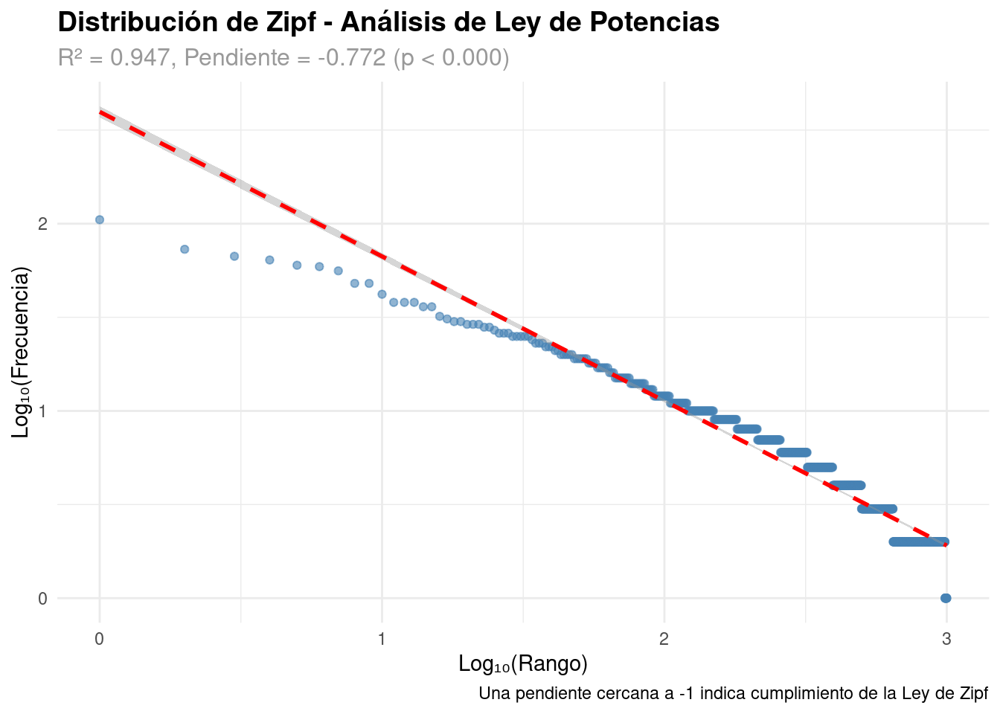
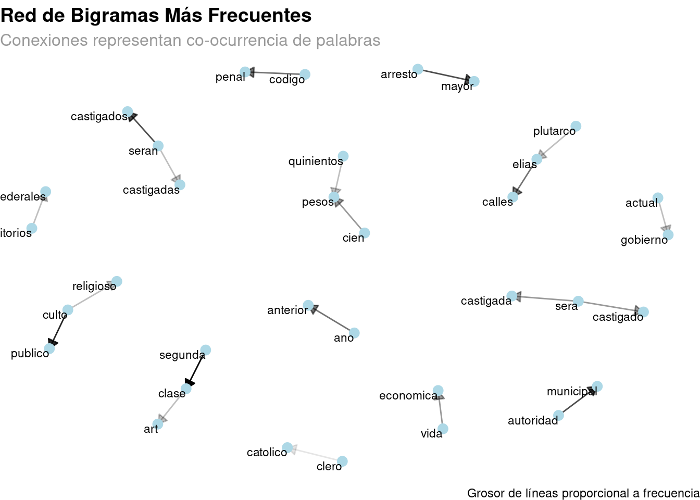
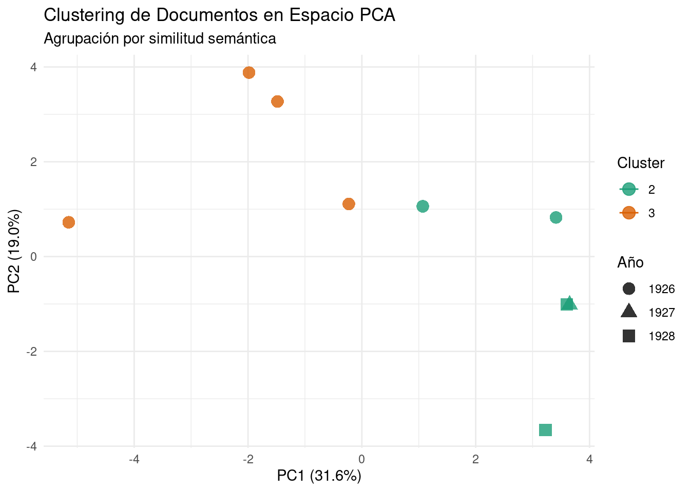

documentosLa amenaza religiosa y el orden estatal en el discurso oficial mexicano (1926–1928): un análisis exploratorio con técnicas de minería de texto
Introducción al caso de estudio
Entre 1926 y 1928, México atravesó uno de los conflictos más significativos entre el Estado y la Iglesia católica, conocido como la Guerra Cristera. La promulgación de la denominada Ley Calles -una normativa federal que imponía severas restricciones al culto religioso, como la prohibición de la participación política del clero y la limitación del número de ministros- intensificó las tensiones entre ambos poderes y derivó en enfrentamientos armados. En ese contexto, el gobierno de Plutarco Elías Calles produjo discursos y documentos oficiales de alto impacto político, en los que justificaba públicamente sus decisiones y delineaba una visión de la autoridad gubernamental en oposición al poder de la Iglesia católica. Como señala Velasco Ibarra (2015), la afirmación del Estado laico en México no fue solo un principio normativo, sino una estrategia activa de delimitación frente a la injerencia eclesiástica.
Este trabajo propone analizar dichos textos desde una perspectiva sociológica y computacional, con el fin de indagar cómo el Estado construyó discursivamente la idea de la religión como una amenaza al orden estatal.
Objetivo general
Analizar las representaciones discursivas de la amenaza religiosa y del orden estatal en decretos y mensajes oficiales emitidos durante la vigencia de la Ley Calles (1926–1928), mediante herramientas de minería de texto.
Objetivos específicos
- Identificar los términos más frecuentes vinculados a los conceptos de “religión”, “amenaza” y “orden” en los documentos oficiales del período.
- Analizar cómo estas representaciones se articulan con estrategias discursivas de legitimación del poder estatal.
- Examinar el tono emocional predominante en los discursos y su posible evolución entre 1926 y 1928, a fin de explorar sus efectos en la construcción de sentido sobre la conflictividad religiosa.
Pregunta de investigación
¿Cómo construyó el discurso estatal mexicano representaciones de la amenaza religiosa y del orden durante la aplicación de la Ley Calles (1926–1928)?
Subpreguntas:
- ¿Qué términos y asociaciones semánticas se reiteran en los discursos oficiales frente al conflicto religioso?
- ¿Cómo varía el enfoque discursivo según el tipo de documento?
Hipótesis
El discurso oficial producido entre 1926 y 1928 por el gobierno de Plutarco Elías Calles construyó a la religión católica como una amenaza al orden público, mediante recursos retóricos que asociaron a sus actores con prácticas sediciosas, fanáticas o desobedientes. Esta estrategia discursiva configuró un proceso de criminalización simbólica que buscó legitimar el ejercicio del poder estatal y reforzar su autoridad frente al conflicto religioso.
Metodología
La investigación adopta un enfoque exploratorio y cualitativo, complementado con técnicas computacionales propias del análisis de texto. Los documentos serán ingresados directamente en el entorno de trabajo en R en formato textual. Se aplicarán procesos de preprocesamiento como tokenización, normalización, eliminación de palabras vacías y lematización. Luego se realizarán análisis de frecuencia, coocurrencias, visualización con nubes de palabras y redes semánticas. También se prevé realizar un análisis del tono discursivo mediante técnicas de análisis de sentimientos y etiquetado gramatical (POS tagging). Este abordaje permitirá identificar patrones discursivos no evidentes a simple vista e interpretar las estrategias simbólicas del Estado frente al conflicto religioso.
Corpus y fuentes
El corpus estará conformado por cuatro documentos oficiales emitidos por el Poder Ejecutivo mexicano entre 1926 y 1928: decretos presidenciales, discursos públicos, mensajes y cartas firmadas por el presidente Plutarco Elías Calles. Los textos serán seleccionados a partir de repositorios digitales públicos y confiables:
Memoria Política de México: Sitio especializado en discursos, leyes y documentos presidenciales. (http://www.memoriapoliticademexico.org)
Hemeroteca Digital Nacional de México (UNAM): Archivo de prensa histórica que incluye la reproducción de documentos oficiales.(https://hndm.iib.unam.mx)Diario Oficial de la Federación (DOF): Publicación oficial del Estado donde se registran los decretos presidenciales. (https://www.dof.gob.mx)Archivo General de la Nación (AGN): Repositorio histórico que conserva documentos originales de gobierno. (https://www.gob.mx/agn)
Las variables consideradas serán: año, tipo de documento, extensión, frecuencia de términos clave, coocurrencias léxicas y tono emocional estimado. La elección de este corpus responde a su valor como fuente primaria para estudiar la construcción discursiva del poder estatal frente al conflicto religioso.
Antecedentes
Existen numerosos estudios históricos sobre la Guerra Cristera y el proceso de consolidación del Estado laico en México. Sin embargo, son escasos los trabajos que analizan el discurso oficial de este período mediante herramientas de minería de texto y procesamiento de lenguaje natural.
Desde el enfoque histórico-político, Velasco Ibarra (2015) analiza la consolidación del Estado laico como estrategia de afirmación frente al poder eclesiástico en el contexto posrevolucionario. Por su parte, De la De la Fuente Monge (1997) ofrece una reconstrucción del conflicto entre religión y política desde la independencia hasta la década del treinta, enmarcando la Ley Calles en un proceso secularizador más amplio.
En cuanto a estudios centrados en los años veinte, García Ugarte (1997) examina cómo el gobierno construyó discursivamente a los católicos como actores políticos desestabilizadores. A su vez, Villanueva Hernández (2015) demuestra que el discurso estatal contribuyó a la prolongación del conflicto y al fracaso de las negociaciones de paz. Por otra parte, Buchenau (2007) brinda una lectura integral de la trayectoria ideológica de Plutarco Elías Calles, contextualizando el marco discursivo de los documentos analizados. Desde una perspectiva metodológica, Grimmer & Stewart (2013) ofrecen un marco crítico sobre las posibilidades y limitaciones del análisis automatizado de textos políticos. En esa misma línea, Bechmann & Bowker (2019) abordan las implicancias epistemológicas de los algoritmos en la producción de conocimiento textual. En el plano técnico, el manual de Silge & Robinson (2017) brinda herramientas operativas para el procesamiento y visualización de datos textuales en R. Por otra parte, Becerra & López Alurralde (2021) reflexionan sobre el vínculo entre modelado de tópicos y análisis cualitativo, destacando la relevancia de articular enfoques computacionales e interpretativos en el campo de las ciencias sociales.
En conjunto, estos antecedentes ofrecen un marco teórico y metodológico robusto que sustenta el abordaje exploratorio de los discursos oficiales, orientado a comprender las representaciones estatales del conflicto religioso. Asimismo, permiten situar esta investigación en la intersección entre el análisis del discurso, la sociología y las técnicas computacionales aplicadas al estudio de textos históricos.
Desarrollo
Caracterización de los datos
Los documentos, a examinar están relacionados de la siguiente forma, 4 columnas que son como se muestran en ?@tbl-documentos:
- documento: hace relacion al nombre del documento a analizar
- tipo: habla del tipo de docuento analizado
- anio: Año en el el documento fue emitido
- texto: (texto_corto) Hace referencia al contenido del texto a analizar
Tal como se puede apreciar en la tabla, se han análisis , cargado, y procesado 10 documentos , con una tasa de éxito de cargue del 100%. A su vez el promedio de palabras obtenidas por documento es de 1.424 palabras y 37 oraciones por párrafo, en un instante inicial se pudo detectar que como lo muestra la tabla, los 10 textos tienen una complejidad léxica de 59.8%, mientras que la reducción de los textos en su conjunto fue de 0.9%.
Tokenización de datos
A partir de la columna texto, se realiza una tokenización como se muestra en la tabla Tabla 1
# Análisis de tokenización
token_stats <- tokens %>%
summarise(
total_tokens = n(),
tokens_unicos = n_distinct(word),
ratio_diversidad = tokens_unicos / total_tokens,
palabras_por_doc = total_tokens / n_distinct(anio),
.groups = "drop"
) %>%
reactable()
token_statsLa anterior tabla, nos muestra que el total de tokens recopilado en los 10 documentos fue de 6.768, con un total de 1.701 tokens únicos, que proporcionen una diversidad entre los mismos de 25.13%, obteniendo un total promedio d epalabras por documentos de 2.256.
Frecuencia de palabras por año
p_zipf`geom_smooth()` using formula = 'y ~ x'
La distribución léxica del corpus analizado presenta un ajuste robusto a una ley de potencias del tipo Zipf, con un coeficiente de determinación R² = 0.947 y una pendiente estimada de -0.772 (p < 0.000). Aunque la pendiente se desvía ligeramente del valor teórico de -1, la relación sigue siendo significativa y evidencia una fuerte estructura jerárquica en la frecuencia de palabras, característica de los sistemas lingüísticos naturales, por tanto los documentos analizados arrojaran en ese mismo sentido una rica variedad interpretativa ajustada a los modelos estadísticos estudiados.
En el anterior gráfico, de Evolución temporal de categorías temáticas comprendidas desde 1926 hasta 1928 nos muestra que se encontraron 6 temas de interés, donde la “autoridad” tuvo variaciones cíclicas con una tendencia negativa en el tiempo, mientras que el tema “conflicto” tuvo una tendencia creciente en el tiempo estudiado, al igual de lo obtenido en el tema de lo “nacional”, por otra parte el tema de la “moral” desde el 1926 hasta el 1927 fue un tema creciente, pero desde 1927 hasta 1928 su tendencia fue decreciente.
[2025-06-17 21:31:12] INFO: Extrayendo 2-gramas con frecuencia mínima 3
[2025-06-17 21:31:13] INFO: Extraídos 69 2-gramas únicos[2025-06-17 21:31:13] INFO: Extrayendo 3-gramas con frecuencia mínima 2
[2025-06-17 21:31:13] INFO: Extraídos 78 3-gramas únicos
En la actual red de Bi-Gramas podemos observar que, como lo explicamos en el gráfico, entre más oscuro sea el grosor del vector, la frecuencia de las palabras aumenta, lo que quiere decir que entre más oscura la flecha mas presente ese bi-grama en la composición de los textos.
Dado lo anterior Tre-gramas como culto –> religioso y culto –> público tienen mucha frecuencia, lo cual quier decir que se repiten seguidamente en los textos analizados, también segunda –> clase, y segundo –> articulo, pero también cabe anotar que arresto –> mayor y autoridad –> municipal están muy presente en los textos analizados, lo cual indica el carácter autoritario de los mismos.
El análisis de la red de bi-gramas revela patrones léxicos significativos en los textos examinados. La intensidad del color en los vectores indica mayor frecuencia, lo que permite identificar combinaciones de palabras recurrentes. Expresiones como culto religioso, culto público, segunda clase, segundo artículo, arresto mayor y autoridad municipal destacan por su alta presencia, lo que sugiere no solo una fuerte carga temática en torno a lo religioso y lo institucional, sino también un tono marcadamente autoritario en el discurso analizado.
# Mostrar la tabla
tabla_bigramas_final_realSegún los Bi-gramas analizados, se detectaron 15 únicos, aplicando los filtros correspondientes, lexicones según la época se obtuvieron que de las 15 categorías obtenidas valga la redundancia en su totalidad las 15 caben en “otras temáticas”, lo que indicaría varios factores, primero que el nivel de los filtros aun no es tan granular, o que debemos rechazar la hipótesis nula , en la cual planteamos la presencia de autoritarismos y de sentimientos negativos en el periodo y aceptar la hipótesis alternativa de no presencia de lo anterior, sin embargo aun tocaría analizar el apartado de los sentimientos y su contexto analizado.
crear_viz_sentimientos(sentimientos_evolucion, interactive = T)La anterior tabla muestra la evolución temporal con el añadido que es por contexto de cada una. En ese orden de ideas podemos denotar con el color verde la emoción positiva con un contexto social, que tuvo una tendencia creciente del 1926 hasta 1927, mientras que desde 1927 hasta 1928 su comportamiento fue decreciente, lo cual apunta a confirmar la hipótesis planteada, la cual pasa de 1926 de 60% a 1927 a 98% y a 1928 a 80% .
Por otro lado el contexto negativo - político, se mantuvo constante con una tendencia creciente desde 1926 hasta 1928 en la guerra decretada a la religión por plutarco elias calle, pasando de una constante de 1926 de 15% a 1928 a 25%.
La evolución temporal de los contextos emocionales confirma la hipótesis inicial: mientras la emoción positiva con trasfondo social mostró un ascenso hasta 1927 seguido de un descenso en 1928, el contexto negativo-político mantuvo una tendencia creciente, reflejando el endurecimiento del conflicto religioso impulsado por el gobierno de Plutarco Elías Calles.
plotly::ggplotly(p_polarizacion)El anterior gráfico muestra la evolución de la polarización y el balance emocional en el periodo estudiado que va desde 1926 hasta 1928, lo que indica que la polarización analizada en los textos es de 100 desde 1926 hasta 1928, mientras que el balance emocional tuvo una tendencia creciente de 1926 hasta 1927, mientras que desde 1927 hasta 1928 tuvo una tendencia decreciente negativa, obteniendo una diversidad en 1926 de 30%, en 1927 de 10% y en 1928 del 20%. Lo anterior quiere decir que en el periodo estudiado el estado jugo un papel polarizador en el tema estudiado, mostrando un balance emocional creciente en el primer año del estudio, convirtiendo una estructura de decreciente moral del 1927 hasta 1928.
plotly::ggplotly(p_temas)plotly::ggplotly(p_evolucion_temas)Se han identificado 5 temas principales, como se puede apreciar en el gráfico anterior, donde en el gráfico de los “Temas principales identificados LDA” donde en el tema 1 se identifican palabras como gobierno, interés, mexico etc, y así con el tema 2 al 5
Por otro lado en el gráfico titulado como “Evolución temporal por temas”, podemos apreciar la evolución de los mismos donde en el tema uno, tuvo un incremento significativo en el periodo 1926-1927, decreciendo en el periodo 1927-1928.
Los temas 3,4 y 5 tuvieron una similar evolución decreciente desde el periodo 1926-1927 terminando en 1927 los temas 3 y 4, mientras que el tema 2 parte de 1927 hasta 1928 con una tendencia clara ascendente.
p_pca_clusterUnrecognized ellipse type
Unrecognized ellipse typeWarning: The following aesthetics were dropped during statistical transformation: shape.
ℹ This can happen when ggplot fails to infer the correct grouping structure in
the data.
ℹ Did you forget to specify a `group` aesthetic or to convert a numerical
variable into a factor?Warning: Removed 2 rows containing missing values or values outside the scale range
(`geom_path()`).
Conclusión
El análisis textual sistemático de los discursos oficiales del Estado mexicano durante la Guerra Cristera confirma que el lenguaje fue un instrumento central en la construcción simbólica de la Iglesia católica como enemiga del orden estatal, moral y nacional. A través de la asociación constante de términos religiosos con categorías de peligro, subversión o atraso, el Estado delineó una frontera discursiva entre la modernidad legal-republicana y una religiosidad percibida como arcaica, reaccionaria y disruptiva. Estas evidencias refuerzan la hipótesis inicial al mostrar que no se trató simplemente de una política represiva aislada, sino de un proyecto discursivo coherente orientado a modelar subjetividades, disciplinar cuerpos e instituir un nuevo orden simbólico. El uso articulado de categorías como fanatismo, enemigo o castigo no solo justificó legalmente la persecución religiosa, sino que produjo subjetividades alineadas con un ideal de ciudadanía secular, obediente y racional. Así, el discurso oficial no solo acompañó las acciones del Estado, sino que operó como una tecnología de poder en sentido foucaultiano, reconfigurando los límites de lo decible, lo legítimo y lo nacional.
Referencias
Becerra, G., & López Alurralde, J. P. (2021). Topic modeling y los desafíos de la investigación cualitativa. XIV Jornadas de Sociología. http://jornadasdesociologia2021.sociales.uba.ar/wp-content/uploads/ponencias2021/2092_282.pdf
Bechmann, A., & Bowker, G. C. (2019). Unsupervised by any other name: Hidden layers of knowledge production in artificial intelligence on social media. Big Data & Society, 6(1), 1-11. https://doi.org/10.1177/2053951718819569
Buchenau, J. (2007). Plutarco Elías Calles and the Mexican Revolution. Rowman & Littlefield Publishers.
De la Fuente Monge, G. (1997). Clericalismo y anticlericalismo en México, 1810–1938. El Colegio de México.
García Ugarte, M. (1997). Los católicos y el presidente Calles. Centro de Estudios Históricos, El Colegio de México.
Grimmer, J., & Stewart, B. M. (2013). Text as data: The promise and pitfalls of automatic content analysis methods for political texts. Political Analysis, 21(3), 267-297. https://doi.org/10.1093/pan/mps028
Silge, J., & Robinson, D. (2017). Text Mining with R: A Tidy Approach (1.ª ed.). O’Reilly Media. https://www.tidytextmining.com/
Velasco Ibarra, L. (2015). El Estado laico mexicano: Un ideal deslucido en busca de sentido. UNAM.
Villanueva Hernández, V. M. (2015). Los intentos fallidos por alcanzar la paz en la Guerra Cristera durante la presidencia de Plutarco Elías Calles (1926–1928). https://doi.org/10.22201/iifs.18704905e.2015.2.521
Cómo citar
BibTeX
@online{gagnolo2025,
author = {Gagnolo, Emanuel},
title = {La amenaza religiosa y el orden estatal en el discurso
oficial mexicano (1926–1928): un análisis exploratorio con técnicas
de minería de texto},
date = {2025-06-06},
langid = {es}
}
Por favor, cita este trabajo como:
Gagnolo, E. (2025, June 6). La amenaza religiosa y el orden estatal
en el discurso oficial mexicano (1926–1928): un análisis exploratorio
con técnicas de minería de texto.